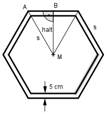

Aufgabe 211 Ein Museum hat ein Seitenfenster in Form eines regelmäßigen Sechsecks. Seine Randeinfassung besteht aus Holzleisten mit einer Breite von 5 cm und einem äußeren Umfang von 3 m. wie groß ist die Fläche A für den Lichteinfall?

U 3 m s = --- = ----- = 0,5 m 6 6 Satz von Pythagoras im Dreieck AMB: s s s2 = (---)2 + halt2 | -(---)2 2 2 s2 s2 - ---- = halt2 4 3 halt2 = --- s2 |√ 4 s halt = --- * √3 2 0,5 m halt = -------- * √3 = 0,43 m 2 hneu = halt – 0,05 m = 0,43 m – 0,05 m = 0,38 m sneu hneu = ------ * √3 |*2 2 2 * hneu = sneu * √3 |:√3 2 * 0,38 m sneu = -------------- = 0,44m √3 sneu * hneu 0,38 m * 0,44 m A = 6 * ------------- = 6 * ----------------- = 2 3 = 0,5 m2